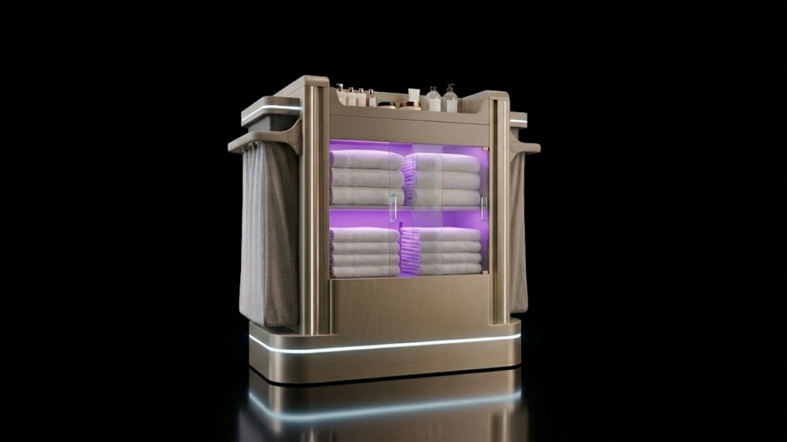
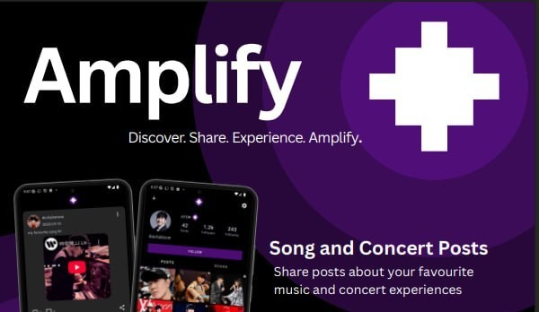
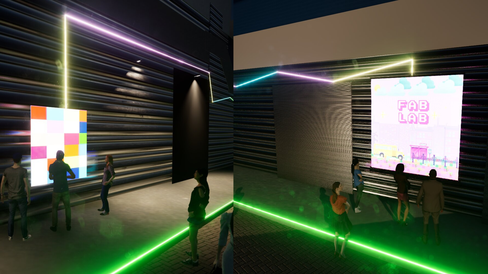
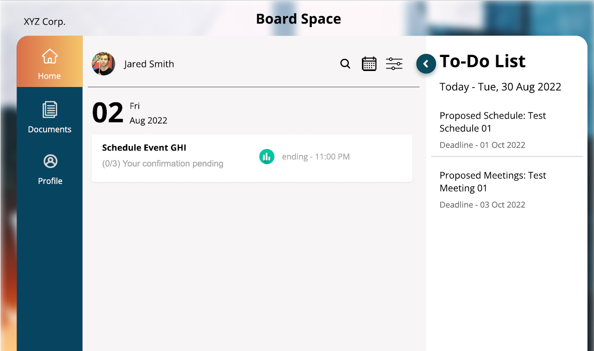
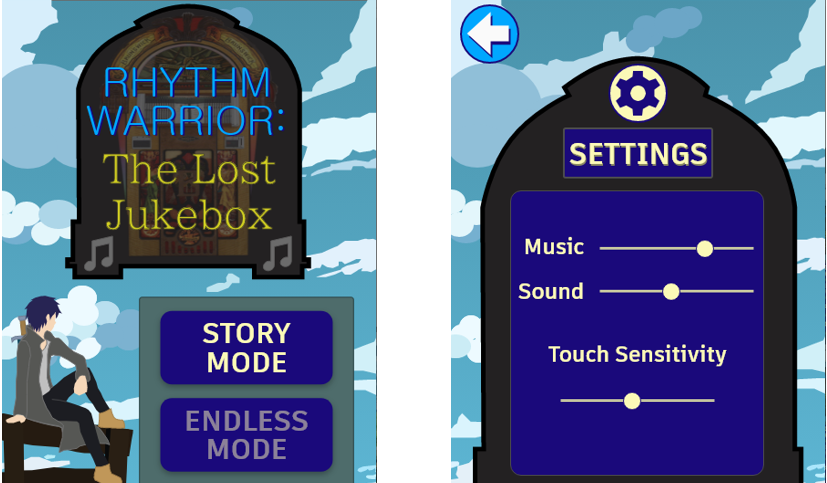
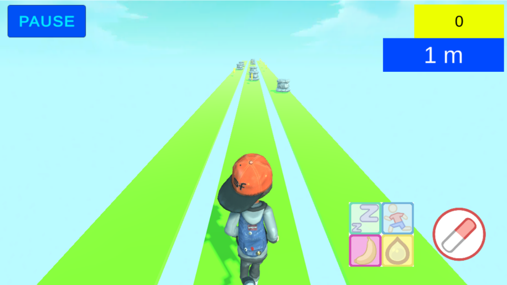
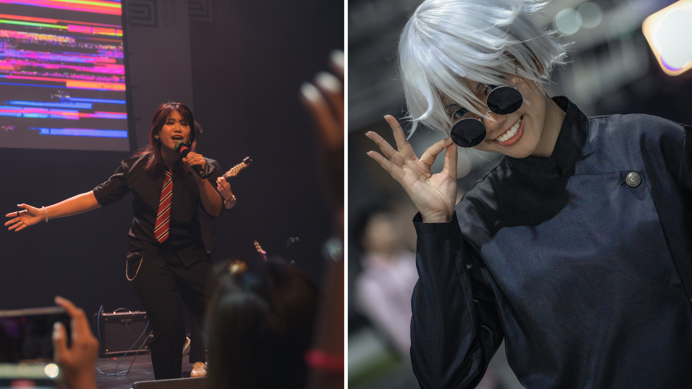
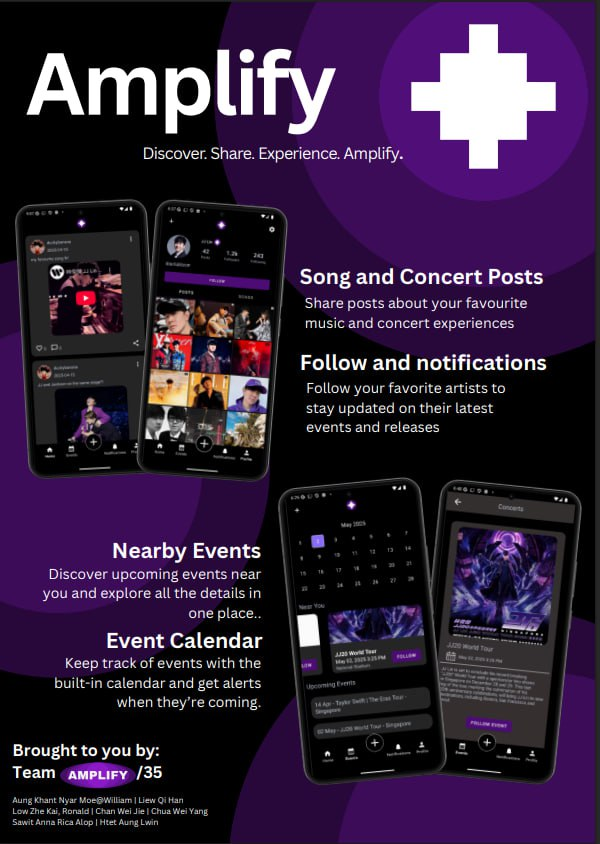
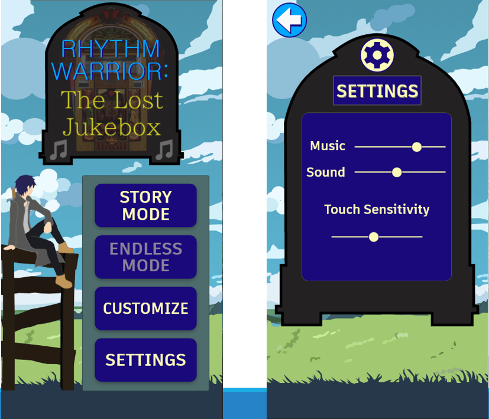

Aspiring UI/UX Designer
This section showcases the relevant projects I have worked on to date.







Passionate about creating immersive digital experiences, I am currently pursuing a BSc in Design & Artificial Intelligence at SUTD. My background combines the creative storytelling of game design with the analytical precision of AI, allowing me to build interfaces that are both aesthetically compelling and technically optimised.
My multi-disciplinary approach to design is also shaped by my personal creative pursuits as a musician and a cosplayer. Whether arranging an existing or original song for a performance or immersing myself into the role of a character, I apply the same principles of precision and audience immersion to my digital products.
anna.r.sawit@gmail.com
anna_sawit@mymail.sutd.edu.sg
+65 96377651
@Ann4RS
Project: KEEPER (Ergonomic Smart Housekeeping Trolley)
Project Context
The Problem: Hotel housekeeping is one of the most physically demanding roles in hospitality , with attendants frequently suffering chronic musculoskeletal injuries. User research revealed that staff push fully laden trolleys weighing approximately 149 kg , which burns 750 kcal per 10,000 steps—three times the exertion of normal walking. This immense physical load leads to high staff turnover, chronic neck/back damage, and mid-shift operational inefficiencies.
My Role: Working in a multidisciplinary team of 5, I aided in Product Visualisation and Interface Interaction Design. I was responsible for bridging the gap between our complex engineering systems and our luxury hospitality stakeholders by taking charge of the end-to-end physical interaction ergonomics and multimedia strategy.
Process
Discover & Map: As a team, we conducted extensive qualitative research, scraping data from 250 hotels and analyzing housekeeping activity workflows. This allowed us to target the trolley as the single intersection point of all ergonomic and procedural pain points.
System Architecture & Prototyping: We engineered an integrated system featuring a 24V high-torque drive motor , load-cell sensing shelves for inventory tracking , and an enclosed UV-LED sterilisation compartment.
Iterative Problem Solving: I collaborated on refining the physical user interface display housing, executing multiple CAD iterations to flush-mount the I2C module and optimise font sizes for better visibility.
My Main Contribution (AI-Driven Cinematic Production): To secure institutional buy-in, I directed and produced a high-fidelity cinematic project trailer. I utilised AI-driven 3D product visualisation tools and advanced cinematic camera techniques (such as technical dolly zooms) to showcase the trolley's 'Luxury Gold' aesthetic finish , dynamic lighting signatures, and internal engineering subsystems.
Impact
Ergonomic Strain Mitigation: Dropped physical pushing effort to a near-zero threshold via the motorised handlebar system , directly mitigating chronic wrist, shoulder, and lower-back strain for the 160 cm female demographic.
Operational Efficiency: The integrated smart load-cell sensing system provided real-time, "at-a-glance" inventory tracking. This completely eliminated mid-shift room-to-storage backtracking trips , saving vital turnaround time during the strict 15–20 minute room refreshment windows.
Energy Expenditure Reduction: Reduced the physical calorie cost of trolley operation by 66.2%, bringing the energy required down from an exhausting 750 kcal toward the baseline of standard walking (253 kcal).
Hygiene & Brand Elevation: Elevated the trolley from a basic industrial tool into a premium hospitality asset with a built-in UV sterilisation compartment optimised to maintain strict hospitality hygiene standards.
For more information, check out our presentation slides, report, and poster.

Project: Amplify (Social Music Ecosystem & Concert Tracker)
Project Context
The Problem: Music enthusiasts lack a unified, dedicated social space to connect over shared tastes, while concert-goers frequently struggle to find consolidated, personalised event updates. Traditional platforms treat music streaming, social networking, and event ticketing as fragmented experiences, creating friction for fans trying to stay updated on their favorite artists.
My Role:Serving as the UI/UX Designer & Multimedia Specialist in a 7-person development team, I bridged the gap between user requirements and technical execution. I assisted with the foundational visual architecture and the end-to-end launch media used to pitch the application.
Process
Feature Prioritisation: Collaborated with the team to establish a modular product roadmap, breaking features into Core (user profiles, song sharing, music feeds), Secondary (artist follows, engagement loops), and Tertiary (personalised concert tracking and in-app calendar systems).
Key Contribution - Low-Fidelity Prototyping: Translated abstract user requirements into a clean, minimalist design framework. I mapped user journeys and designed low-fidelity wireframes using Adobe XD, establishing the core navigation bar architecture to ensure seamless cross-screen transitions, intuitive feed structures, and accessible calendar layouts before frontend engineering began. Check out the Adobe XD clickable low-fi prototype link here..
Cross-Functional Handoff: Partnered with the development team to hand over design assets, ensuring the Azure SQL database, backend APIs (Azure Functions), and Android frontend aligned perfectly with the intended user experience.
Key Contribution - Product Showcase & Video Production: Directed and produced the final product video trailer. I captured high-fidelity screen captures of working features (real-time notification triggers, concert filtering, etc.) and synthesised them into a high-energy visual narrative to demonstrate user value to evaluators.
Impact
Optimised Cognitive Load: Replaced a fractured multi-app journey (social media + ticketing sites + calendar apps) with a centralised, "one-stop" minimalist UI, dropping the steps required to discover a localised concert and add it to a personal schedule down to a few clicks.
Seamless Cross-Screen Navigation: The implemented navigation bar and uniform design tokens allowed beta testers to switch between social feeds, concert tracking, and personal profile systems seamlessly.
High-Fidelity Feature Validation: Successfully validated full-stack architecture loops—demonstrating real-time Azure SQL data retrieval, secure Azure AD B2C user authentication, and responsive animations through the final multimedia video showcase trailer.
For more information, check out our presentation slides.
Project: LUMINO (Interactive Smart Lighting Installation)
Project Context
The Problem: Poorly lit outdoor pathways around the school campus (such as the alleyway near the FabLab) created a strong sense of insecurity, discomfort, and physical tripping hazards for students and faculty walking at night. Initial user research revealed that a significant majority of campus commuters felt unsafe in these dimly lit areas, frequently forcing them to take longer, alternative routes to avoid the space entirely.
My Role: Serving as the Lead Visualisation & UI Designer within a 5-person multidisciplinary team, I was responsible for transforming our hardware and environmental concept into a compelling digital narrative. I owned the end-to-end multimedia strategy, experiential rendering, and final video production.
Process
User Discovery & Ethnographic Research: Developed user personas (such as freshman hostel residents and faculty) to map emotional journeys and pinpoint specific dark zones along campus pathways causing the greatest friction.
Multi-Sensory System Architecture: Co-designed an ecosystem combining a physical interactive game panel, embedded light discs on the pathways, solar-powered overhead lighting, and artistic laser projections to make the alleyway interactive, safe, and aesthetic.
Hardware Iteration: Collaborated on testing the physical interactive panel's logic loop (where consecutive button presses cycled through dynamic, loop-based light settings powered by an Arduino architecture).
My Main Contribution (Cinematic 3D Product Visualisation): To realistically demonstrate how our system transforms an environment dynamically at night, I built a high-fidelity virtual model of the campus pathway. Using the Twinmotion software, I authored a cinematic trailer showcasing real-time atmospheric lighting transitions, global environmental light behaviors, 3D material textures, and simulated safety enhancements before physical deployment.
Impact
Perceived Safety & Comfort Optimisation: Validated the design framework through user-re-surveys; after experiencing the interactive LUMINO system solution, 71.9% of respondents found the solution highly effective at reversing the negative spatial experience and boosting comfort levels.
Functional System Reliability: Successfully validated the interactive panel's deployment metrics through extensive multi-user loop testing, confirming flawless execution of the 3-click light cycle and automatic power-down commands.
High-Fidelity Stakeholder Alignment: Utilised the Twinmotion cinematic visualisation to perfectly bridge the gap between technical Arduino-driven hardware and environmental aesthetics, allowing stakeholders to experience the real-time atmospheric impact of the installation prior to physical assembly.
For more information, check out our presentation slides, and poster.
Project: Board.Vision App Redesign (Enterprise UX/UI Optimisation)
Project Context
The Problem: Corporate board members and business executives handle high-stakes corporate governance, approvals, and scheduling under extreme time constraints. Legacy enterprise management tools often suffer from dense, information-heavy configurations that increase visual clutter, leading to high cognitive load, friction during voting workflows, and potential delays in critical executive decision-making. Due to the high sensitivity of corporate governance data, the application layout required a major visual optimisation while enforcing strict corporate confidentiality and information architecture standards.
My Role: Served as the UX/UI Design Intern. I took ownership of auditing the existing interface layout and engineering a modernised, high-fidelity responsive mobile design system aimed at accelerating executive task completions.
Process
Interface Audit & Layout Heuristics: Evaluated the existing layout patterns of the live app, analyzing user friction points within critical corporate paths—specifically the user authentication flow, corporate entity switching, calendar event tracking, and document signature approval states.
Design System & Component Architecture: Designed a more comprehensive, scalable design system in Figma to modernise the platform's visual interface. I built a responsive UI component library from the ground up, implementing consistent design tokens, stylised icon families, and modular layout cards tailored specifically to high-density financial and legal data.
End-to-End Screen Flow Optimisation: Transformed the core user experience across over 60 distinct application views. I re-designed the layout for critical high-priority paths.
Interactive Prototyping: Linked individual high-fidelity screens into a comprehensive clickable mockup within Figma, testing the fluid transition of sub-menus, expanding lists, and interactive voting buttons (Approved / Disapproved / Abstained) to ensure flawless navigation logic.
Impact
Minimised Executive Cognitive Load: Dropped physical pushing effort to a near-zero threshold via the motorised handlebar system , directly mitigating chronic wrist, shoulder, and lower-back strain for the 160 cm female demographic.
Accelerated Decision-Making Workflows: The integrated smart load-cell sensing system provided real-time, "at-a-glance" inventory tracking. This completely eliminated mid-shift room-to-storage backtracking trips , saving vital turnaround time during the strict 15–20 minute room refreshment windows.
Enterprise-Grade Asset Delivery: Reduced the physical calorie cost of trolley operation by 66.2%, bringing the energy required down from an exhausting 750 kcal toward the baseline of standard walking (253 kcal).

Project: Rhythm Warrior: The Lost Jukebox (Mobile UI/UX Research & Design)
Project Context
The Problem: The mobile gaming market features highly fragmented player preferences between the high-engagement storytelling of adventure games and the quick, mechanics-driven loops of endless runners. Developers struggle to blend these genres seamlessly without causing player frustration due to clunky HUDs, jarring control transitions, or high cognitive load.
My Role: As the sole Lead UI/UX Researcher and Product Designer. I managed the entire product lifecycle—from initial market ethnographic research and target audience identification to wireframing, high-fidelity asset design, and iterative user playtesting.
Process
Target Audience Discovery: Formulated and deployed a comprehensive user screener survey targeting teenage and young adult gamers to isolate play patterns. Analyzed user personas to contrast casual vs. hardcore preferences regarding control layouts and session lengths. Research consolidated into presentation slides here.
Foundational GDD Architecture: Authored a robust Game UX Design Document (GDD) that merged endless-running physics with a rhythm-based combat system. I established a systematic UI screen flow map defining core menus, customisations, settings, and stage-progression hierarchies.
Low-Fidelity Prototyping: Translated abstract mechanics into layout sketches, producing interactive low-fidelity wireframes using Marvel App to validate rapid button accessibility, navigation loops, and optimal finger-reach zones for mobile touch screens.
High-Fidelity Asset & Interactive Prototyping: Designed custom sprite sheets, modular buttons, thematic background layouts, and character customisation elements using Adobe Illustrator. Integrated these assets into a high-fidelity interactive prototype in Adobe XD, carefully engineering responsive micro-interactions for active gameplay screens, countdown indicators, and stage-clear feedback loops.
Usability Testing & Refinement: Orchestrated structured playtesting and post-fieldwork interview sessions with the original research participants. Synthesised qualitative user feedback regarding UI sizing and responsiveness to refine asset scaling, visibility, and layout friction points. View final presentation here.
Impact
Optimised Interface Navigation: Streamlined screen flows by mapping a uniform, accessible navigation layout, allowing playtesters to switch seamlessly between character customisation, settings, and stage selection screens with minimal user friction.
Reduction in Task Friction: Validated the mobile HUD layout during testing, ensuring that rapid dual-action combat swipes and endless-runner dodging elements could be triggered simultaneously without blocking critical visual zones on mobile screens.
Data-Driven Design Validation: Successfully bridged initial audience market research with final interactive outputs, demonstrating a complete end-to-end design methodology where 100% of the UI asset packages directly addressed the visual and mechanical expectations outlined by the initial user personas.
Project: ALIVE Project (Medical Education Endless Runner Minigame)
Project Context
The Problem: Healthcare institutions face significant challenges when trying to educate the general public and adult patients on medical literacy—specifically regarding antibiotics, proper self-care, and the biological differences between bacteria and viruses. Traditional medical pamphlets have low engagement and retention rates. The team needed a way to translate dense healthcare guidelines into an accessible, interactive format that reinforces healthy habits without causing information overload.
My Role: Serving as a Game UI/UX and Mechanics Designer within a 4-person team, I took end-to-end ownership of designing, documenting, and structuring a mobile endless runner minigame aimed at gamifying patient education.
Process
Instructional Design & Ideation: Synced healthcare educational goals with classic arcade loops (inspired by Subway Surfers and Temple Run). I designed a 3-lane platform system where players encounter distinct bacterial and viral strains as stationary obstacles and enemies.
Mechanics & Combat Architecture: Authored a comprehensive Game Design Document (GDD) introducing an intuitive medical combat mechanic. I engineered a dual-button shooting layout featuring a 3-second cooldown loop to test player decision-making under time constraints.
Inclusive Asset & Character Design: Structured a diverse character selection framework featuring 4 distinct avatars (AJ, Amy, Timmy, and Granny) to maximize demographic representation and empathy for hospital patients of all age groups.
Interface Mapping & Gameplay Validation: Developed the layout wireframes for the mobile screen, placing high-frequency swiping commands (jumping, lane switching) on the left and tactical combat buttons on the bottom right. I then captured and analyzed video playthrough loops to evaluate UI responsiveness, platform curvature visibility, and weapon cooldown indicators.
Impact
Active Educational Reinforcement: Dropped physical pushing effort to a near-zero threshold via the motorised handlebar system , directly mitigating chronic wrist, shoulder, and lower-back strain for the 160 cm female demographic.
Balanced Cognitive Load: The integrated smart load-cell sensing system provided real-time, "at-a-glance" inventory tracking. This completely eliminated mid-shift room-to-storage backtracking trips , saving vital turnaround time during the strict 15–20 minute room refreshment windows.
Verified Technical Workflow Execution: Reduced the physical calorie cost of trolley operation by 66.2%, bringing the energy required down from an exhausting 750 kcal toward the baseline of standard walking (253 kcal).